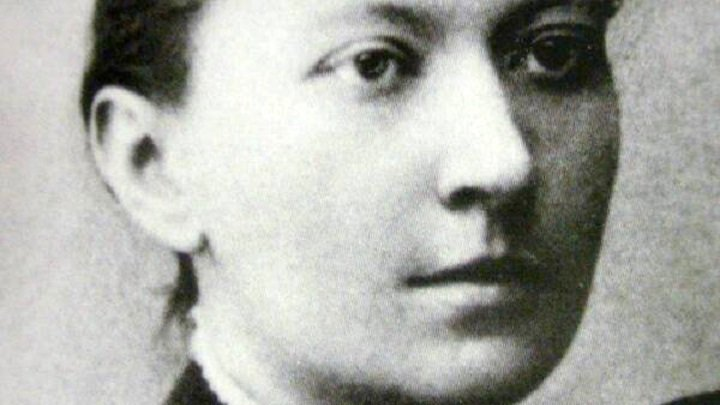

Дніпрова Чайка (справжнє ім'я - Людмила Василевська-Березіна) - це українська письменниця та поетеса, яка народилась 1 листопада 1861 року в селі Карлівка Ананьївського повіту Херсонської губернії (нині село Зелений Яр Миколаївської області). Дебютувала Дніпрова Чайка 1885 року в одеському альманасі "Нива", де було надруковано дві її поезії - "Вісточка" та "Пісня". В своїй творчості письменниця переважно зверталась до тематики долі селян, життя інтелігенції та революційних подій 1905 року. Окрім поезії писала п'єси, казки, оповідання та нариси. Низка її казок й досі читають українські мами своїм малюкам на ніч.
"Ой ви, зорі, срібні зорі, В небі серед ночі, Не одні у вас встромились Заплакані очі.
Не одне до вас зітхання З грудей вилітає, Не одне під вашим сяйвом Серце замирає.
Ви мої дитячі очі Рано здивували, І думки небесні перші Ви подарували.
І в безсонну ніч дівочу, Як душа прохала Щастя, – знов між вами очі Доленьки шукали.
Впала в серце зірка щастя, Ясно серце сяє І шукать рівні між вами Очі посилає...."